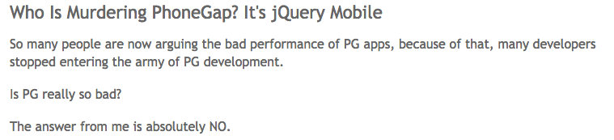

Building Hybrid Apps with AngularJS and Ionic
The missing SDK for Hybrid Apps

Mike Hartington
Developer Advocate for Ionic
Someone who writes a lot of JS
“I got this app idea”
We'll make billions”
The Downsides of Native
Proficiency in each platform required
Entirely separate code bases
You have to write Java....
More Platforms.
More Problems.


“Is there an alternative?”

Hybrid Apps: HTML5 that acts like native
Phonegap renamed to Cordova
Web wrapped in native layer
Direct access to native APIs
Familiar web dev environment
Develop a single code base (web platform)

“Then there's this guy...”

http://techcrunch.com/2012/09/11/mark-zuckerberg-our-biggest-mistake-with-mobile-was-betting-too-much-on-html5/
Really JQuery...
“Hybrid apps are slow!”
“The Times They Are a-Changin'”
Mobile devices have
rapidly improved!
| Year | Device | Processor | RAM |
|---|---|---|---|
| 2007 | iPhone | 620 MHz | 128 MB |
| 2010 | iPhone 4 | 1 GHz | 512 MB |
| 2013 | iPhone 5S | 1.3 GHz dual-core | 1 GB |
| 2014 | iPhone 6 | 1.4GHz dual-core | 1 GB |
Web-standards have
rapidly improved!
caniuse.com is lookin' pretty good nowadays
Android is now Chromium-based
iOS users keep their devices up-to-date

The webs finally caught up
but...
Native SDKs Are Great
Common UI
Views
Navigation and stack history
Transitions
Gestures
You get a lot of functionality without having to write much code

There's No Web SDK
It's the wild-west for hybrid apps
We need to bridge the gap between web and native
We need rich, native-style UI components and interactions
We need UI APIs, not just jQuery widgets
“Howdy.”
Web Technologies You
Already Know and Love


(You'll feel right at home)

http://www.google.com/trends/explore#q=angularjs%2C%20ember.js%2C%20knockoutjs%2C%20backbonejs&date=8%2F2011%2037m&cmpt=q
Standing on the
Shoulders of AngularJS
Proven for large-scale webapp development
Extends the HTML vocabulary
UI Components using Directives and Services
Native Focused
Modeled off of native SDKs
Built to work with Cordova
Performance Obsessed
Hardware accelerated animations
Minimal DOM Manipulation
Remove 300ms tap delay
Plain ol' CSS
Cohesive visual system
Clean and simple
Easy to customize
Stand-alone CSS (independent of Ionic's JavaScript)

CSS generated from the Sass preprocessor
Quickly give your app its own look and feel
CSS designed to be easily overridden
Variables based with default settings
80+ reusable and useful mixins
“How does it all come together?”
Talk is Cheap,
show me the code
praise be to the demo gods...
$ npm install -g ionic
Quickly create a project with starter templates
Boilerplate app structure ready for customization
Preconfigured tools: Gulp, Sass, Bower, etc.
LiveReload in the browser and on Device
Update Ionic Framework library files
Build and run native apps
Ionic CLI
$ npm install -g ionic cordova$ ionic start myapp sidemenu$ cd myapp$ ionic serve
Ionic Angular Testing
It's just an AngularJS app!
Setup with a great separation of concerns
Karma unit tests
Protractor e2e tests
MIT LICENSED
Free to use (even commercially)
COMMUNITY POWERED
Active developer forum, IRC and GitHub repo
Ionicons

Over 600 MIT licensed font-icons included
Get Started with Ionic!
Easy-to-follow videos, tutorials and formulas
learn.ionicframework.com
Visit the Community Forum
forum.ionicframework.com
Contribute on GitHub
github.com/driftyco/ionic